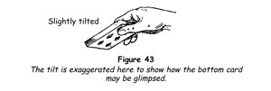
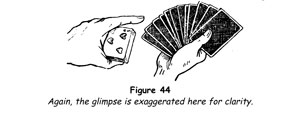
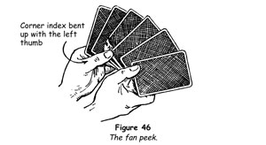
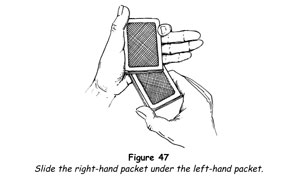

In magic the term glimpse is applied to the act of secretly sighting and taking note of any particular card. There are many ways of doing this. Some of them have graduated into the conjuring class from the gaming table and some require considerable skill to execute properly. The best of these will be considered later. In the meantime let us take up first the one that is most easily acquired by the beginner.
Bottom-card Glimpse 1
We shall suppose that you have handed the deck to a spectator to be shuffled. When he has done that, hold out your right hand to take back the deck, purposely holding it rather high so that he will have to raise his hand to give you the deck. Take the pack with your thumb underneath it on the face card, your fingers on the back. At that moment it is natural for you to glance at the cards, and by tilting them ever so little with the thumb you can glimpse the index of the bottom card at the inner left corner (figure 43). Immediately look at the spectator and address him with some short remark, such as, 'You are satisfied that you have mixed the cards thoroughly?'

Do not tilt the pack so far that the whole of the face card is visible to you. Slope it just enough to see the index only. Do not turn your gaze towards the pack as you tilt it: you should only look at the pack as you take it. Get the glimpse and then look at the spectator. Make the action a natural one and no one will have the least suspicion that you have seen the bottom card.
Immediately after making the glimpse, execute an overhand shuffle, controlling the sighted card by keeping it at the bottom or sending it to the top of the pack.
Sometimes the spectator will play into your hands. Many laymen make the shuffle roughly, and often you can glimpse the bottom card either as the shuffle is made or as the cards are being squared after the shuffle. Always make a point of watching for this. If you do not sight the card, then resort to the method explained above.
Bottom-card Glimpse 2
This is a bold method but a good one.
Offer the pack for shuffling and when it is returned hold it face downwards at the ends between the right thumb and fingers. Say, 'Kindly notice - nothing up my sleeves,' and draw back the right sleeve with the left hand. As the right arm is extended, tilt the pack enough to enable you to glimpse the index of the bottom card.
Bottom-card Glimpse 3
Offer the pack for shuffling and when it is returned hold it in the left hand as for dealing, face downwards. Thumb off about a dozen cards from the top and take these in a fan in the right hand, letting it be clear that you do not see the faces.
Hold the hands well away from your body as you say, 'You will certify that these cards are well mixed?' Run your left index finger over the faces of the fanned cards, from right to left, with the back of the hand towards yourself (figure 44). Note the bottom card of the pack, which faces you, and instantly avert your gaze. Your eyes must not dwell on the card but flick it in passing.

Replace the fanned cards on the deck in the left hand.
Top-Card Glimpse 1
Take the pack in the left hand, as for dealing, but with the index finger curled over the outer end and the thumb lying flat against the left-side edge.
Gesture to someone, saying, 'Will you help me?' As you make this gesture, turn the back of the hand uppermost, bringing the deck face upwards. Push the top card to the right with the left fingertips; this will expose the inner index (figure 45). Return the hand to its original position.
Riffle shuffle the pack, retaining the top card in position but making sure that the original bottom card is lost near the bottom of the pack in the event that someone may have noticed it and may be following it.
Fan Peek
This is a method of ascertaining which card a spectator chooses from among a number of cards.
Hold the cards vertically and thumb them from the left into the right hand, inviting someone to touch any card and remember it. Place the left thumb against the lower edge of the card he touches, at the index corner, and drop the hands somewhat, never glancing at the cards.
Raise the fan again, saying that you wish him to be sure to remember his card, and instantly raise the index corner with the thumb, glimpsing the index (figure 46), and remove the thumb. Close the pack and hand it for shuffling.

Wherever possible a chosen card should be glimpsed by one or another of the methods given above as soon as possible after its replacement in the pack. In the event that the card is accidentally lost, or if a spectator insists on being allowed to shuffle the cards himself, knowledge of what the card is still leaves you master of the situation.
For other methods of glimpsing, refer to the palm glimpse and the double-lift glimpse.
To illustrate the usefulness of the glimpse there is no better trick depending on it than the one that follows.
TRICKS WITH THE GLIMPSE
Gray's Spelling Trick
A spectator replaces a selected card in the pack, which is honestly squared and shuffled. The name of the card is then spelled mentally by the spectator, who applies one letter to each card dealt by the magician. On reaching the last letter the spectator calls 'Stop!' He names his card. The last card dealt is turned face upwards and proves to be the very card he selected.
1. Hand the deck to a spectator and have him shuffle the cards thoroughly. Take the pack back, glimpsing the bottom card, and then shuffle overhand retaining the card on the bottom. Suppose the card is the five of spades.
2. Spread the pack and have a card freely chosen, noted by the drawer and shown to several people nearby. This is a precaution it is wise to take, because it gets others interested and prevents any subsequent misnaming of the card, either by carelessness or by design. Close the deck.
3. Holding the deck by its sides at the tips of your thumb and your middle and ring fingers, draw out the lower half with your right thumb and middle finger, making what is termed an undercut. Let the packet in your left hand fall on to the palm and hold out that hand for the replacement of the chosen card on top. Immediately drop the right-hand packet on it and square the deck openly.
Be careful to hold the right-hand packet face downwards and do not glance at it. Some performers take the glimpse of the bottom card at this time, but this is a very bad practice, widely open to detection.
4. The position now is that the chosen card is in the middle of the deck, with the glimpsed card, the five of spades, immediately above it. Shuffle overhand as follows. Lift the whole pack and freely shuffle off about one-third of the cards, let about another third of the cards fall in a block and then shuffle the remaining cards freely. Thus the two cards, the glimpsed card and the chosen card, must remain together in the middle. It is true that a casual shuffle is not likely to separate them, but it is best to be certain.
5. Square the cards and say, 'Some people imagine that a magician can steal a card out of the pack without anyone seeing him do it. Let me show you that your card is still buried among the other cards.' Turn half left, hold the deck in your left hand, the bottom card facing the spectators, and push the cards off one by one, with the left thumb, taking them with the right hand. Do this at a fairly rapid pace, but not too fast. As you begin, say, 'You might think I detect your card by your expression when you see it; therefore I shall not attempt to watch you.' This is your excuse for looking at the cards as you run them off.
6. Watch for the index of the five of spades. The moment you see it, note the card you have just taken in your right hand, which will be the chosen card. Let us suppose that this card is the ten of hearts. Begin at once to spell ten of hearts mentally, saying to yourself t for the ten of hearts you have already taken in your right hand, e as you take the five of spades (the glimpsed card), n for the next card, o and f for the next two, and so on until you arrive at the letter s.
7. At this point separate your hands rather widely, look at the spectator and ask him, 'Have you seen your card?' He replies 'Yes.' Bring your hands together, at the same time gripping the packet in the left hand between the thumb and index finger and extending the other fingers so that you can slide the right-hand packet under the left-hand packet smoothly (figure 47). Do this quietly, without looking at your hands, while saying to the spectator, 'Very well. No use going any farther.'

8. You now have everything set for the climax, so you tell the spectators what you are going to do. 'I shall deal cards from the top and as I do so I want you to spell the name of your card mentally, one letter for each card. Suppose your card is the queen of hearts; as I deal the first card you will say to yourself q, for the next card u, the third card e, and so on; and don't forget the o-f. Is that clear? Very well. When you come to the last letter just call “Stop!” and the card in my hand at that moment will be the very card of which you are thinking. Impossible, you say? Well, let's try it.'
Deal the cards deliberately and keep a check on the spelling yourself, for you know the card.
9. When the spectator calls 'Stop!' keep the card in your hand face downwards and say, 'Now, you have thought of a card [ignore the fact that he actually took it from the pack and replaced it] and you have spelled its name mentally. Would you be surprised to find that the cards have arranged themselves automatically so that this card at which you called “Stop!” is your card? You would? Then name your card.'
'The ten of hearts.'
Turn the card face upwards slowly and reveal that very card.
The above feat can be made even more effective in the following way:
1. Follow the same procedure up to the point at which you have spelled out the name of the chosen card and have arrived at the last letter, in step 6. At once note the next card, which let us say is the king of hearts. Continue running cards and mentally spell this card, taking one card for each letter until you reach the s; then separate your hands and ask the spectator if he has seen his card. As before, in putting the two packets together you place the right-hand packet underneath the one in your left hand.
2. Turn the deck face downwards and you are set to spell out, first, the king of hearts. Explain to the spectator the peculiar property of playing cards by which, under certain conditions, they place themselves in position to be spelled out and appear on the final letter. 'For example,' you say, 'suppose I name a card, any card - let us say the king of hearts - and spell it out dealing a card for each letter. We shall find the king of hearts in that position.
'You don't believe me? Very well, let's try.'
Spell k-i-n-g-o-f-h-e-a-r-t-s, dealing one card for each letter, and turn up the king of hearts on the final s. 'You see, the result is infallible if you concentrate on the card you want to appear. You take the deck, think intently of your card, then spell it mentally, dealing a card for each letter, as I did.'
3. The spectator follows your instructions and stops the deal on his last letter. You ask him, 'Have you spelled the name of the card of which you are thinking?'
'Yes.'
'Would you be surprised if the next card is your card? You would? Very well. Name your card.' He does so and you have a climax that will astonish the onlookers and one that you yourself will enjoy.
Round and Round
This fine self-working trick makes use of the fan peek.
1. Take any ten cards from the pack and have them shuffled. Turn your back and instruct the spectator to look at and remember the top card, after doing which he is to think of any small number and silently transfer that number of cards one by one from top to bottom.
2. Turn around, take the cards and point out that you cannot know which card he has chosen; at the same time study the faces of the cards. Thumb them off, face upwards, into the right hand one by one, reversing their order. Scrutinise the cards closely and glance at the spectator occasionally, as though plumbing his thoughts.
Shake you head and, still holding the cards with their faces towards yourself, take the five bottom cards in the right hand. Glance at them, then at those in the left hand, holding them well apart. Again shake your head disconsolately, saying, 'I'm having trouble with you!' Bring the hands together and place the right-hand cards above the others, at the top of the packet.
By this means you have, first, reversed the order of the ten cards, and, second, placed the first five cards below the second five.
3. Return the cards to the spectator, turn your back and instruct him to transfer silently as many cards from top to bottom as he did in the first case, and then one card more.
4. Take the ten cards and fan them between your hands, face outwards, as you request the spectator to concentrate on his card. Peek at the fourth card from the top, using the fan peek, and remember this card; it is the chosen card.
5. Give the spectator the cards and have him place the top card on the table, the next card at the bottom of the packet, the next card on the table, the next at the bottom, and so on until he holds only one card.
Say to him, 'You took the ace of hearts, didn't you?' naming whatever card you peeked, and when he agrees ask him, 'Do you know how I knew?' 'No.' 'Look at the card in your hand.' He does and finds that it is his card.